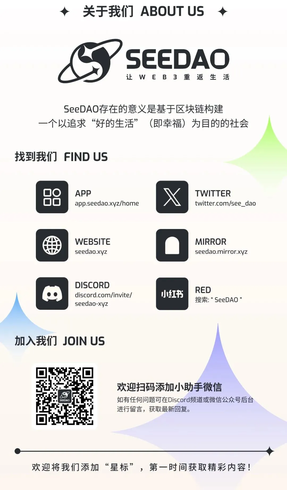

一月，Matters 马特市七日书的主题是「我的（不）完美人生」。
你对人生的想象是什么？有没有一个瞬间，对生活中看似一切稳定的日常产生怀疑？又或者你曾为自己鼓起勇气、跳脱主流框架，为自己冒险的感受是怎样的？后来又发生了什么故事？
生活是诸多大小决定的累积，什么样的习惯形成了如今的你？
迎接 2025 年，一起记录生活与人生。
本活动，你可以一起写下你的主题小故事；也可以阅读他人的相关小故事。
在这个为期七天的计划里，将有一群同伴与你一起，每天一个题目，以自由书写的方式，完成七天的日记。它是一个练习，让你沉淀生命故事的同时，亦勇于相信自己的写作；它是一场陪伴，知道写作路上有人阅读，这是一场自己的旅程，更是结伴同行。
自由写（Free Writing）是一个专门的写作技巧，意指人们在一段有限的时间内写作，有时是根据指定的题目书写，写作时不太关注修辞、常规和结构，让思维自然流淌。作品不一定完美、不一定严谨，但可以帮助作者克服自我批评的障碍。作家彼得・艾尔博（Peter Elbow）致力推动自由写作，「写作的结果是你必须从用错的词写错的意思开始；但要持续写作，直到用对的词来表达正确的意思。只有到最后，你才会知道自己在说什么。」
「自由写」亦是回到心里的那个地方，对应一个题目，只写二十分钟、半小时，写作时要保护这段时间，屏除干扰，跟思绪尽情对话，最后看看你写下了什么，并且尽量不要评判它。因为你要相信自己写下了最重要的内容。

本期题目
第一天
有没有一段时间或经历，让你重新审视对理想人生的定义？例如你以为自己一直期待的东西，得到了、或接近了，却发现自己并不想要？
第二天
记一次你想要大喊「我不干了！」的时刻
第三天
写一个时刻或一件事，让你开始怀疑他人所加诸给你的价值观是否正确。
第四天
你人生至今做过最鼓起勇气、脱离主流框架的一件事，不论大小。可能是你决定采取跟众人都不一样的做法；或者是你决定去做一件身边人都不看好的事情；又或者是为了自己冒一次险。
活动报名：https://matters.town/e/eqsfuc3qph6u (科学上网)
写作期 ：1 月 6 号（一）至 1 月 13 号晚上 23:59（东八区）截止
